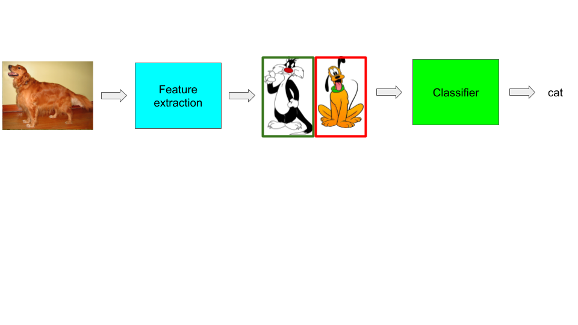
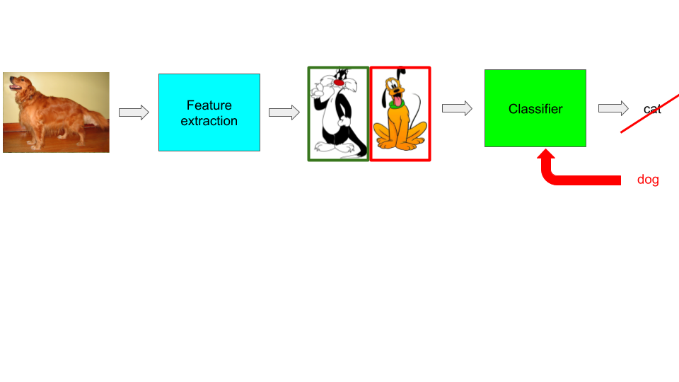
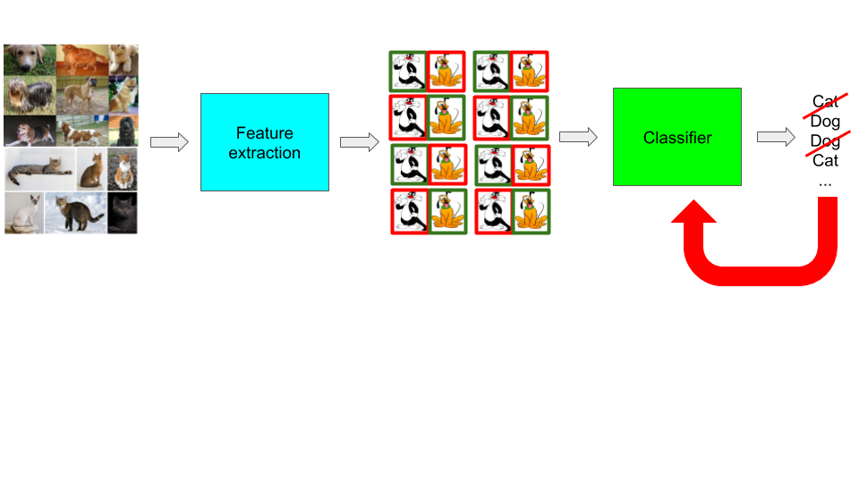
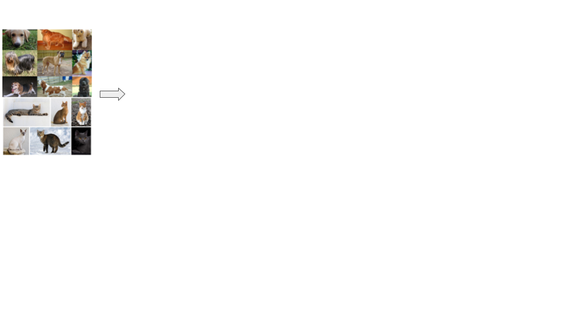
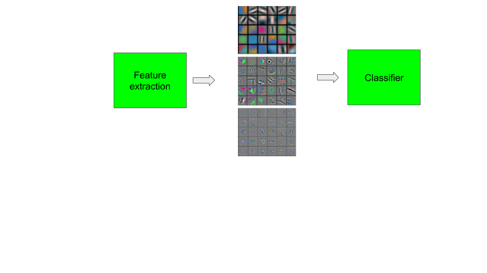
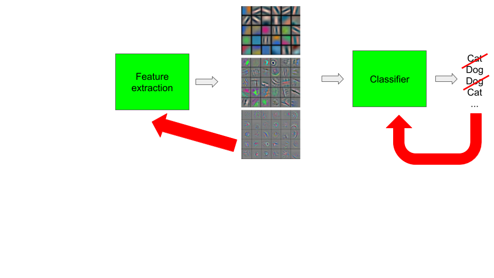

class: center, middle, title-slide count: false # Lecture 1: ### Machine Learning pipeline ### ... and an overview of this course <br/><br/> .bold[Marc Lelarge] --- # Goal of the course ## Overview - Learn the basics of deep learning: "How" it works - Learn a deep learning framework: [PyTorch](https://pytorch.org/) - See various application domains: vision, recommender systems, NLP... -- ## Deep Learning .red[Do It Yourself!] - Fast evolving field with a lot of ressources available online - Use a neural network right away, get results and then understand it! - .red[This course requires your active participation] -- ## Course website: [Basics of Deep Learning](https://mlelarge.github.io/dataflowr-web/plutonai.html) --- # What is Deep Learning ### Typical supervised machine learning system .center[  ] --- # What is Deep Learning ### Typical supervised machine learning system .center[  ] --- # What is Deep Learning ### Typical supervised machine learning system .center[  ] --- # What is Deep Learning ### Deep Learning system .center[ <img src="images/lesson1/ml4.png" style="width: 1000px;" /> ] .credit[Credit: image of features [Zeiler, Fergus 2014](https://cs.nyu.edu/~fergus/papers/zeilerECCV2014.pdf)] --- # Why Deep Learning Now? - Five decades of research in machine learning - .grey[CPUs/GPUs/storage developed for other purposes] - .grey[lots of data from “the internet”] - .grey[tools and culture of collaborative and reproducible science] - .grey[resources and efforts from large corporations] --- # Why Deep Learning Now? - Five decades of research in machine learning - CPUs/GPUs/storage developed for other purposes - .grey[lots of data from “the internet”] - .grey[tools and culture of collaborative and reproducible science] - .grey[resources and efforts from large corporations] .center[ <img src="images/lesson1/gpu_tpu.png" style="width: 450px;" /><br/><br/> <small>_GPU and TPU_</small> ] --- # Why Deep Learning Now? - Five decades of research in machine learning - CPUs/GPUs/storage developed for other purposes - lots of data from “the internet” - .grey[tools and culture of collaborative and reproducible science] - .grey[resources and efforts from large corporations] .center[ <img src="images/lesson1/imagenet.png" style="width: 450px;" /> ] --- # Why Deep Learning Now? - Five decades of research in machine learning - CPUs/GPUs/storage developed for other purposes - lots of data from “the internet” - tools and culture of collaborative and reproducible science - resources and efforts from large corporations .center[ <img src="images/lesson1/frameworks.png" style="width: 500px;" /><br/><br/> ] --- # Deep Learning pipeline ## Dataset and Dataloader .center[  ] --- # Deep Learning pipeline ## Model .center[  ] --- # Deep Learning pipeline ## Loss and Optimizer .center[  ] --- # Deep Learning pipeline ## Dataset and Dataloader + Model + Loss and Optimizer = Training .center[ <img src="images/lesson1/ml4.png" style="width: 1000px;" /> ] --- # Overview of the course: 1- Course overview: machine learning pipeline --- # Overview of the course: 1- .grey[Course overview: machine learning pipeline] 2- PyTorch tensors and automatic differentiation * .red[Training] - in PyTorch: [`torch.Tensor`](https://pytorch.org/docs/stable/tensors.html) and [`torch.autograd`](https://pytorch.org/docs/stable/autograd.html) --- # Overview of the course: 1- .grey[Course overview: machine learning pipeline] 2- PyTorch tensors and automatic differentiation 3- Classification with deep learning * .red[Loss] and .red[Optimizer] - in PyTorch: [`torch.optim`](https://pytorch.org/docs/stable/optim.html) and [Loss functions](https://pytorch.org/docs/stable/nn.html#loss-functions) in `torch.nn` --- # Overview of the course: 1- .grey[Course overview: machine learning pipeline] 2- PyTorch tensors and automatic differentiation 3- Classification with deep learning 4- Convolutional neural networks * .red[Building block for a model] - in PyTorch: [Convolutional layrers](https://pytorch.org/docs/stable/nn.html#convolution-layers) and [Pooling layers](https://pytorch.org/docs/stable/nn.html#pooling-layers) in `torch.nn` --- # Overview of the course: 1- .grey[Course overview: machine learning pipeline] 2- PyTorch tensors and automatic differentiation 3- Classification with deep learning 4- Convolutional neural networks 5- Embedding layers and dataloaders * .red[Building block for a model] - in Pytorch: [Sparse layers](https://pytorch.org/docs/stable/nn.html#sparse-layers) * .red[Datasets and dataloaders] - in PyTorch: [`torch.utils.data`](https://pytorch.org/docs/stable/data.html) --- # Overview of the course: 1- .grey[Course overview: machine learning pipeline] 2- PyTorch tensors and automatic differentiation 3- Classification with deep learning 4- Convolutional neural networks 5- Embedding layers and dataloaders 6- Unsupervised learning: auto-encoders and generative adversarial networks * .red[Deep learning architectures] - in PyTorch: recap! --- # Overview of the course: 1- .grey[Course overview: machine learning pipeline] 2- PyTorch tensors and automatic differentiation 3- Classification with deep learning 4- Convolutional neural networks 5- Embedding layers and dataloaders 6- Unsupervised learning: auto-encoders and generative adversarial networks 7- Recurrent neural networks * .red[Deep learning architectures] - in Pytorch: [Recurrent layers](https://pytorch.org/docs/stable/nn.html#recurrent-layers) --- # Organization of the course ## Each module is made of: ### a video ### some slides (presented in the video) ### a jupyter notebook (presented in the video) ### some practicals -- ## All the ressources are available through [Pluton AI](https://pluton.ai/course) -- # And now a [first example](https://colab.research.google.com/github/mlelarge/dataflowr/blob/master/PlutonAI/01_intro_PlutonAI_colab.ipynb)! --- class: end-slide, center count: false The end.